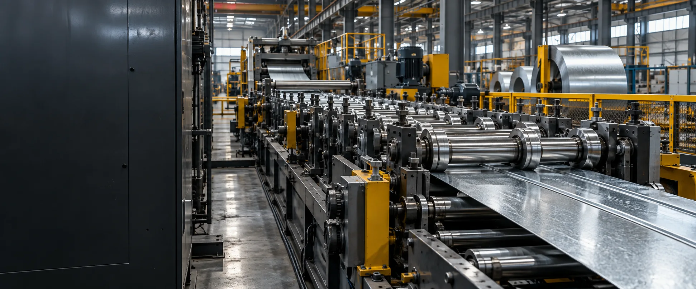
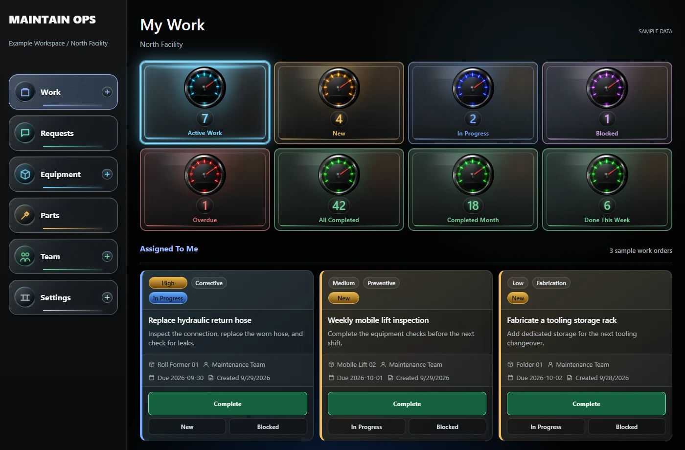
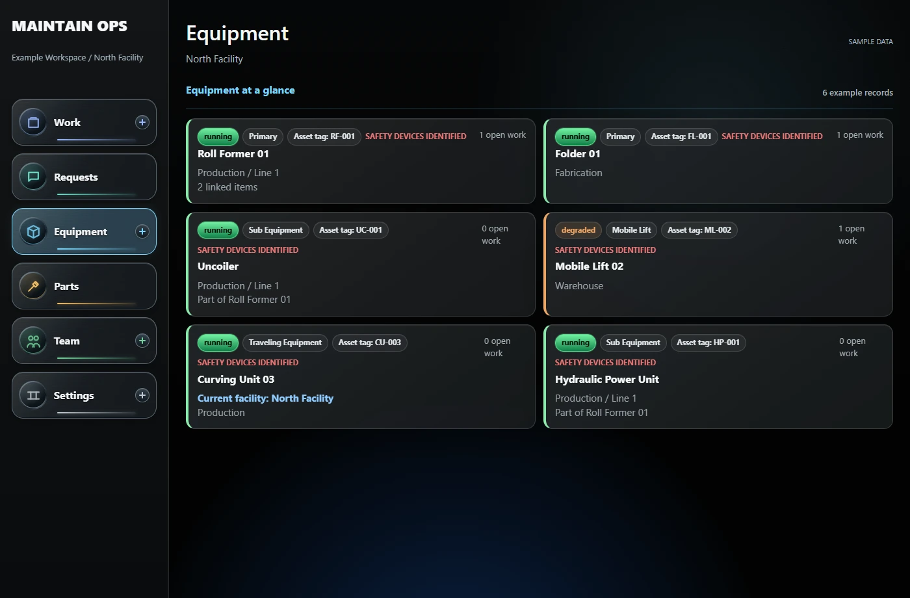
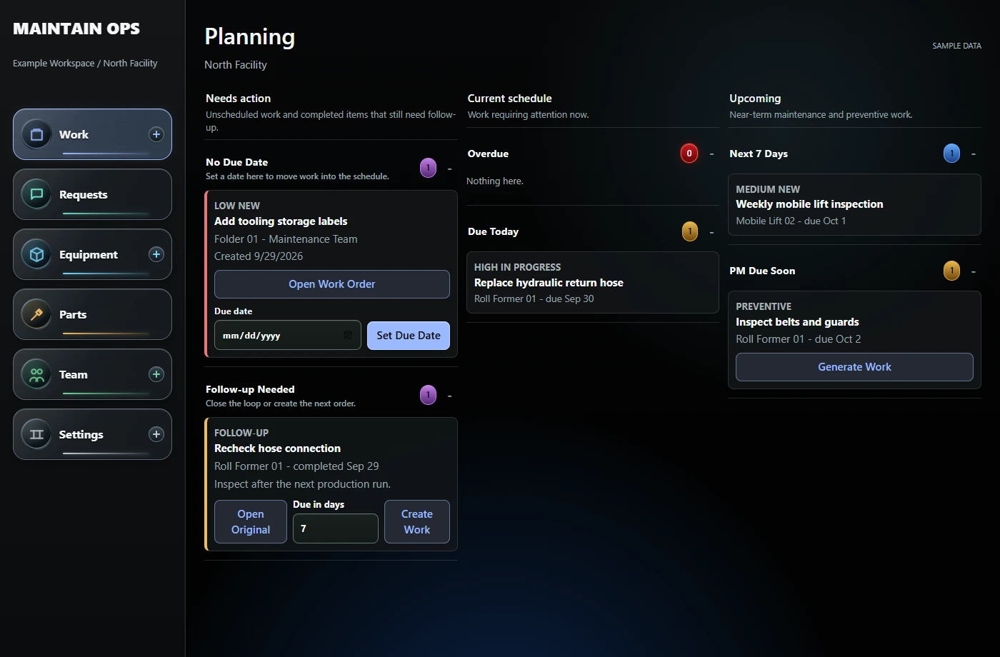

01
Work, organized.
Own the next step with assigned work, priorities, due dates, and Quick Fix.
WORK ORDERS + PLANNING
Built for the work behind the work
Keep the floor moving.
The requests. The repairs. The people.
Bring your maintenance operation together.
01 / THE PLATFORM
Less searching for context.
More time getting work done.
Own the next step with assigned work, priorities, due dates, and Quick Fix.
WORK ORDERS + PLANNINGKeep repairs, photos, files, and equipment relationships connected to the machine.
EQUIPMENT + HISTORYA QR code gets an issue from the floor into requests, ready to become work.
REQUESTS + QR INTAKEConnect parts and usage to the job. Keep inventory and the work in the same place.
PARTS + INVENTORY02 / INSIDE MAINTAINOPS
A familiar instrument panel.
A clear view of the work behind every number.
Your work, current status, and next action together.

Equipment, condition, and linked work in one place.

Unscheduled work, current priorities, and upcoming maintenance.

03 / THE WORKFLOW
From a problem spotted on the floor
to a repair recorded for the next person.
Capture an issue with a request, a photo, or a Quick Fix.
Assign the job, set its priority, and connect the right equipment.
Keep procedures, parts, updates, and the team with the job.
Record the resolution and follow-up. The next repair starts informed.
THE REST OF THE OPERATION, CONNECTED.
MADE FOR THE PEOPLE KEEPING THINGS RUNNING.
Your equipment. Your team. Your operation.